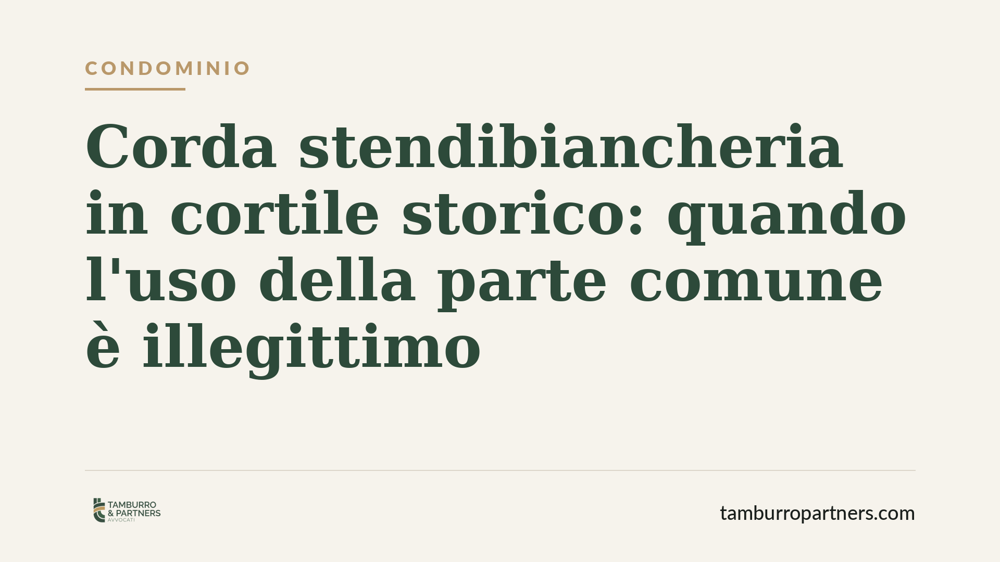

Corda stendibiancheria in cortile storico: quando l'uso della parte comune è illegittimo
Una corda tesa per stendere il bucato nella corte di un edificio storico può violare i diritti degli altri condòmini. Lo ha stabilito il Tribunale di Venezia, ordinandone la rimozione. La decisione richiama un principio spesso trascurato: l'uso della cosa comune è libero, ma incontra limiti precisi quando altera il decoro o comprime lo spazio aereo altrui.

Il caso
Una condòmina aveva installato una corda stendibiancheria attraversando la corte comune di un edificio storico. I proprietari degli appartamenti ai piani superiori si erano opposti, lamentando la compromissione dello spazio aereo prospiciente le loro unità e il pregiudizio estetico all'area.
Il Tribunale di Venezia ha accolto la domanda, ordinando la rimozione della corda e qualificando l'installazione come uso illegittimo del bene comune.
Inquadramento normativo
Il perno della decisione è l'art. 1102 cod. civ., che consente a ciascun partecipante di servirsi della cosa comune a due condizioni: non alterarne la destinazione e non impedire agli altri condòmini di farne pari uso. Sono i cosiddetti "limiti al pari uso": la libertà del singolo si ferma dove inizia quella degli altri.
A questo si affianca l'art. 840 cod. civ., secondo cui la proprietà del suolo si estende allo spazio sovrastante ("colonna d'aria"). La pronuncia ha valorizzato la distinzione tra i muri comuni — parti condivise dell'edificio — e lo spazio aereo che si proietta davanti alle singole unità immobiliari: quest'ultimo non è liberamente occupabile dagli altri condòmini con installazioni fisse o semipermanenti.
Rileva inoltre l'art. 1123, comma 3, cod. civ., che àncora la ripartizione delle spese e, indirettamente, la logica dell'uso, alla diversa utilità che le parti comuni offrono ai singoli. In un contesto storico, poi, il profilo del decoro architettonico assume peso ulteriore.
Perché la decisione conta
Il principio è netto: stendere il bucato è un'esigenza legittima, ma non giustifica qualsiasi modalità. Quando la corda occupa in modo stabile lo spazio aereo antistante gli appartamenti altrui, o quando incide sul decoro di una corte di pregio, l'uso trasmoda in abuso.
La qualifica di "uso ostruzionistico" merita attenzione. Non basta invocare una consuetudine o la natura minimale dell'ingombro: ciò che conta è l'effetto concreto sul godimento degli altri condòmini e sull'estetica del bene comune.
Negli edifici storici il margine di tolleranza è più ristretto. Il valore architettonico dell'immobile diventa un parametro autonomo di valutazione, indipendente dal disagio pratico lamentato dai vicini.
Implicazioni pratiche
Per il condòmino che intende installare strutture — stenditoi, tende da sole, antenne, condizionatori — la lezione è chiara: l'iniziativa individuale sulle parti comuni non è mai automatica.
Occorre verificare tre profili. Primo, se l'installazione comprime lo spazio aereo o visivo di altre unità. Secondo, se incide sul decoro architettonico, soprattutto in contesti tutelati o di valore storico. Terzo, se il regolamento condominiale contiene divieti o prescrizioni specifiche.
Per gli altri condòmini, la pronuncia conferma che è possibile reagire in via giudiziale contro l'occupazione impropria delle parti comuni, chiedendo la rimozione a spese di chi ha realizzato l'opera.
L'amministratore, dal canto suo, ha titolo per intervenire a tutela delle parti comuni e per sollecitare la rimozione di installazioni non autorizzate.
Cosa fare in concreto
- Consultate il regolamento condominiale prima di installare qualsiasi struttura sulle parti comuni: molti regolamenti disciplinano espressamente stenditoi, tende e simili.
- Verificate l'impatto sullo spazio aereo altrui: evitate installazioni che si proiettano davanti alle finestre o ai balconi di altre unità.
- Valutate il vincolo storico o il decoro: negli edifici di pregio documentate preventivamente la compatibilità estetica dell'intervento.
- Formalizzate un accordo o una delibera assembleare quando l'uso incide sensibilmente sulla cosa comune, così da prevenire contenziosi.
- Se subite un'occupazione impropria, diffidate per iscritto il condòmino responsabile prima di adire il giudice, coinvolgendo l'amministratore.
Disclaimer
Contributo informativo a cura di Tamburro & Partners - Avv. Giuseppe Tamburro. Non costituisce parere legale.
Ogni condominio ha una storia a sé.
Se gestisci un'amministrazione e vuoi un confronto su una specifica questione condominiale, scrivi allo studio. Ti rispondiamo entro un giorno lavorativo.